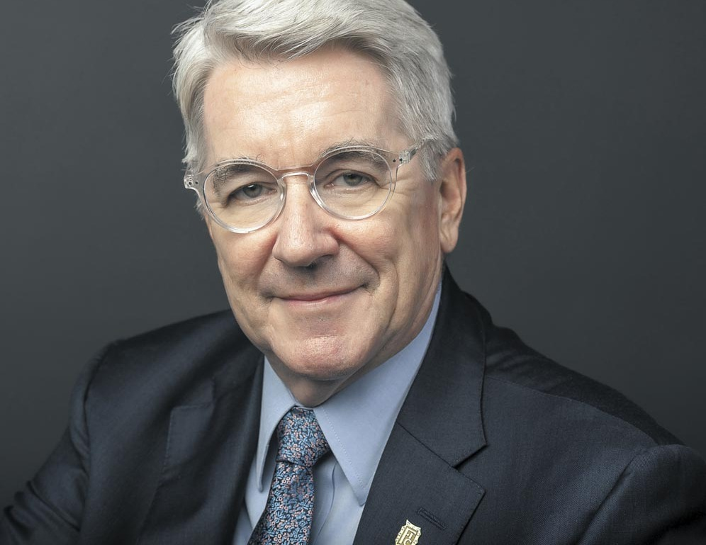
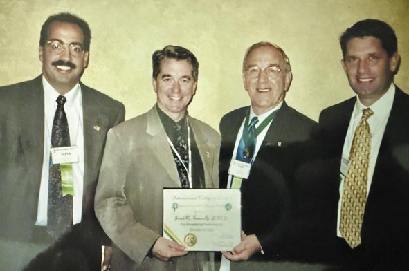
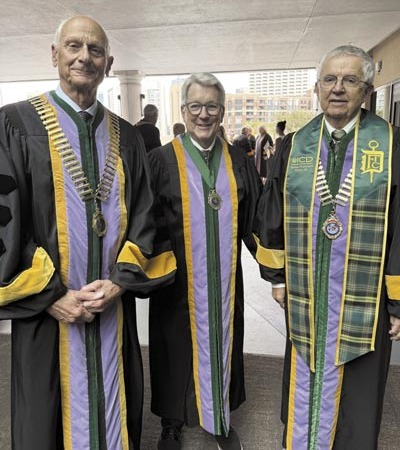
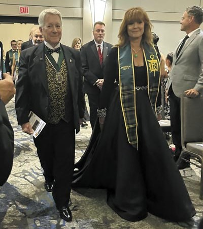
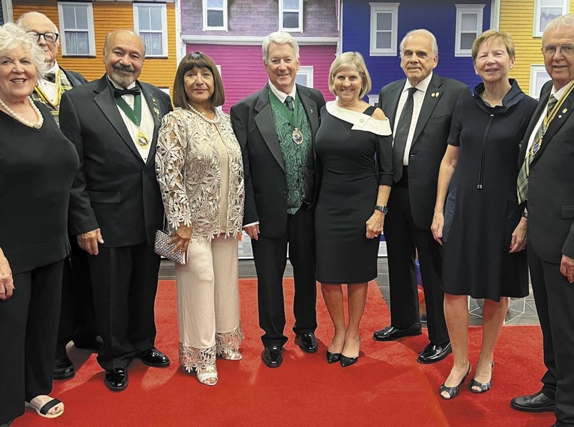
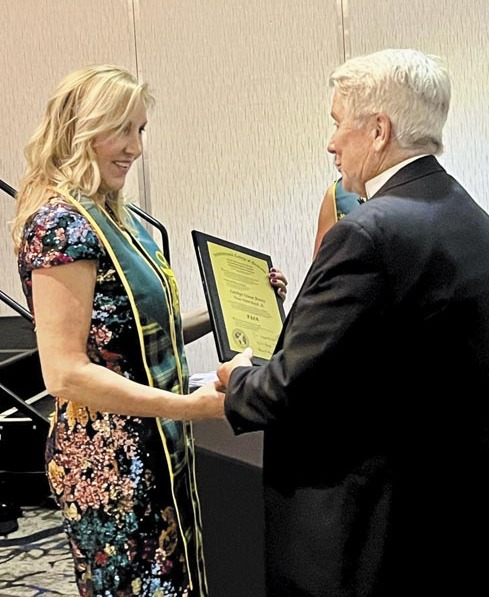
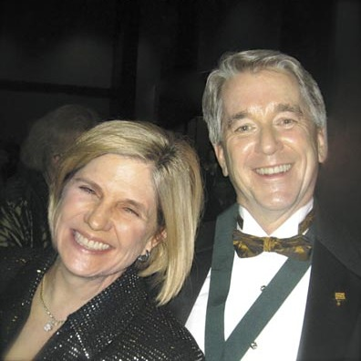
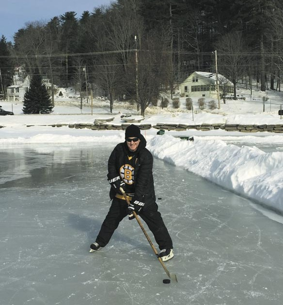

Вітальня · журнал «ДентАрт» 2025 №4
Доктор Джозеф Кеннілі: «ICD буде визначати „стоматологічні пустелі“ і принесе в ці пустелі воду»
Інтерв'ю: Сергій РадлінськийМи раді зустріти у віртуальній Вітальні «ДентАрту» доктора Джозефа Кеннілі зі Сполучених Штатів Америки, який є Генеральним секретарем Міжнародної колегії стоматологів, цієї світової професійної почесної організації зі 105-річною історією, і водночас реєстратором Секції XX, Регіони.
Наша розмова проходить за лаштунками 159-ї щорічної сесії Асоціації стоматологів штату Огайо, яка традиційно проводиться восени в Коламбусі.

Наймав розумних людей з позитивним характером, і вони робили пацієнтів щасливими
– Шановний Джо, дякуємо за можливість подивитися на нашу улюблену професію, стоматологію, з точки зору Міжнародної колегії стоматологів і через Вашу власну кар'єру стоматолога... Як Ви вирішили стати стоматологом, де отримали диплом стоматолога і який напрям обрали в цій професії?
– Мене назвали на честь брата мого батька, Джозефа П. Кеннілі, доктора стоматології, члена Міжнародної колегії стоматологів (FICD), який був улюбленим стоматологом у моєму рідному місті Біддефорді, штат Мен. За порадою батька я вирішив, що маю хороші здібності для кар'єри в стоматології, тому пішов шляхом свого дядька. Як у Джозефа Р. Кеннілі, доктора стоматологічних наук, магістра Міжнародної колегії стоматологів (MICD), у мене інша друга літера імені, інший ступінь у стоматології й інший статус члена Міжнародної колегії стоматологів (ICD), ніж у мого дядька. Ми деякий час заплутували людей, поки він не пішов на пенсію в 1986 році.
Я отримав диплом стоматолога в Університеті Тафтса в Бостоні, штат Массачусетс, у 1981 році і два роки працював стоматологом-асистентом, перш ніж у 1983 році відкрити власну приватну практику в рідному місті. Я керував високотехнологічною практикою, орієнтованою на пацієнтів, до 2019 року, коли пішов на пенсію за кілька місяців до пандемії COVID. Це доводить, що я ясновидець (сміється).
– Організація стоматології у Сполучених Штатах відрізняється своїми національними особливостями, відомими в усьому світі, такими як вартість освіти, індивідуальність приватної практики, діяльність гігієністів, тиск з боку юристів... Як ці й інші особливості американської стоматології вплинули на Вашу кар'єру стоматолога?
– Стоматологічна освіта у США дуже дорога, особливо в приватних університетах. Це впливає на вартість лікування, оскільки багато молодих стоматологів обтяжені величезними боргами. Моя студентська заборгованість на той час вважалася високою, близько 80 000 доларів, але вона не досягала сьогоднішньої суми річної вартості навчання в моїй альма-матер, університеті Тафтса. Заборгованість ускладнювала отримання фінансування для початку моєї приватної практики в 1983 році, але я знайшов банк, який ризикнув кредитувати мене, попри відсутність застави. Вони залишалися моїм банком протягом усієї моєї кар'єри.
Мені пощастило працювати разом із талановитими стоматологічними гігієністами, двоє з яких працювали зі мною понад 30 років, а двоє були зовсім дітьми і росли разом зі мною. Я це дуже ціную і вважаю прекрасним. Я дуже поважаю гігієністів і їхню професію, а покійна видатна Естер Вілкінс, авторка чудового підручника з гігієни порожнини рота, була моєю викладачкою.
Моя приватна практика була для мене джерелом великої гордості. Співробітники були добре навчені, отримували гідну зарплату і добре виконували свою роботу. Я казав їм: «Я плачу вам за те, щоб ви думали. Якщо ви не думаєте, я не отримую віддачі від своїх грошей». Я наймав розумних людей з позитивним характером, і вони робили наших пацієнтів щасливими. Вони також робили мої робочі дні приємними.
За роки своєї практики я ніколи не зазнавав особливого тиску з боку юристів. Я вважав, що важливо пізнати пацієнтів як особистостей і налагодити з ними стосунки. Один з моїх викладачів у Тафтсі завжди казав нам: «Ніколи не лікуйте незнайомців». Якщо мені вдавалося налагодити довірливі стосунки з кожним пацієнтом, я міг виправити ситуацію в тих небагатьох випадках, коли все йшло не так, як я планував.
Усі дороги ведуть до Рима, а стоматологічні дороги – у США
– Колись казали, що всі дороги ведуть до Рима – це тому, що саме римляни проклали їх у світі від себе... Дивлячись на професійну кар'єру найвідоміших європейських стоматологів, ми бачимо, що кожен з них має у своїй стоматологічній історії стажування, навчання або практику у США, і, можливо, саме тому вони стали такими успішними в Європі і світі! Як американська стоматологія стала лідером стоматологічної освіти у світі і проклала стоматологічні шляхи до світу від себе?
– Стоматологічна освіта у вигляді спеціальних університетських програм, що викладаються на рівні докторату, була розроблена у Сполучених Штатах. Першою такою програмою у світі була програма Балтиморського коледжу стоматологічної хірургії, який зараз є Університетом Меріленда. Він створив ступінь доктора стоматологічної хірургії (DDS). Гарвард був другим, і він пропонував ступінь Dentiriae Medicinae Doctoris (DMD), і школи США діляться на ці два табори.
З моменту опублікування впливового звіту Флекснера про медичну освіту в 1910 році стоматологічні школи США перейшли на навчальну програму, засновану на наукових доказах.
Стоматологічні школи США акредитуються Комісією з акредитації стоматологічних шкіл, що встановлює суворі стандарти для навчальних програм.
США є лідером у розробці нових стоматологічних методів і технологій, а американські стоматологічні школи часто проводять всебічну підготовку з використанням цих нових інструментів. Сюди входять такі інновації, як комп'ютерне проєктування і виробництво (CAD/CAM), цифрова рентгенографія, внутрішньоротові сканери, віртуальна і доповнена реальність. Американські стоматологічні програми мають доступ до цих технологій і зазвичай включають їх у свої навчальні програми.
Клінічний досвід – основа навчальної програми стоматології у США, і багато студентів отримують практичний досвід уже на початку навчання. Великі стоматологічні школи, такі як Нью-Йоркський університет і Тафтс, також забезпечують широкий клінічний досвід, тут студенти працюють з різноманітним складом пацієнтів.
Багато американських університетів постійно входять до рейтингу найкращих у світі. Ці навчальні заклади залучають найталановитіших студентів, створюючи висококонкурентне й інноваційне освітнє середовище. Ці таланти не обов'язково зі США. Наприклад, нинішній декан мого університету Тафтса народився і виріс у Кенії, але вищу освіту здобув у США.
Членство в ICD є особливою честю в кар'єрі стоматолога
– Міжнародна колегія стоматологів була заснована у 1920 році доктором Цурукічі Окумурою і доктором Луїсом Оттофі, двома стоматологами, які змогли передбачити далеке майбутнє стоматології, зрозуміли психологічні особливості стоматологічної професії і запропонували шляхом визнання заслуг перед професією і суспільством створити організацію почесних стоматологів... І ми вдячні їм за таку далекоглядність! Як ICD нині продовжує свою головну місію визнання заслуг стоматологів через запрошення приєднатися до своїх членів?
– Я вивчив історію цих двох стоматологів. Окумура навчався в Токійському стоматологічному коледжі, коли Оттофі провів кілька місяців у Японії, прямуючи на Філіппіни, щоб заснувати там стоматологічну освіту. Оттофі вільно ділився своїми знаннями і працював над поліпшенням стандартів стоматологічної освіти всюди, де бачив у цьому потребу. Народившись сином лікаря в Угорщині, він був генієм, який володів 12 мовами, більшістю з яких вільно, тому перекладав багато стоматологічних текстів і журнальних статей для використання в багатьох країнах. Він був другом і сучасником Гріна Вардімана Блека, і вони деякий час викладали разом у Північно-Західному університеті. Він також був фармацевтом, лікарем і юристом. Окумура був рушійною силою, що спонукала Оттофі до створення Міжнародної колегії стоматологів. Він не дозволяв Оттофі відволікатися на інші інтереси і справи.
Членство в ICD є особливою честю в кар'єрі стоматолога. Стати членом ICD не можна просто так, для цього необхідний спонсор і суворий процес рецензування, під час якого перевіряються такі аспекти, як характер кандидата і його діяльність на підтримку стоматології і тих, кому вона служить. Менше одного відсотка стоматологів у світі можуть додавати літери FICD після своїх професійних ступенів.



– ICD – глобальна професійна організація, до якої входять понад 12 000 стоматологів з більшості країн усіх континентів планети, чиї досягнення в стоматології і суспільному житті зафіксовані членством у Колегії... Як організована структура Міжнародної колегії стоматологів, щоб мати можливість презентувати діяльність кожного члена і всієї спільноти ICD на благо професії і суспільства?
– Сучасні комунікаційні технології зробили світ тіснішим, але ICD все ще ділиться на секції, щоб забезпечити місцевий контроль над місцевими проєктами і набором нових членів. Стоматологи займають відносно невелику нішу на ринку медичних послуг, і вони знають одне одного і взаємодіють між собою у своїх регіонах. ICD відбирає спеціалістів-стоматологів, готових ділитися своїми знаннями і талантами з колегами, студентами і пацієнтами, яких вони обслуговують.
З часом, коли потреба у векторі обміну стоматологічною інформацією по всьому світу зменшилася, ICD стала більш безкорисливою силою для всього хорошого в нашій професії: догляду за групами ризику, наставництва молодих колег, обміну навичками і знаннями, а також сприяння поліпшенню стоматологічного здоров'я в країнах, що розвиваються. ICD спрямована на просування найблагородніших аспектів стоматологічної професії.
Секція XX — інкубатор для нових секцій

– Ви очолюєте спеціальну секцію, Секцію XX, Регіони, райони якої розкидані по всьому світу і яка, як мені здається, є своєрідним інкубатором для створення і зростання нових секцій. Чи могли б Ви розповісти, що такого особливого в Секції XX і як Вам вдається її очолювати?
– Я полюбив Секцію XX. Її члени часто працюють у складних умовах і настільки віддані допомозі своїм спільнотам, що часто дивуються тому, що їх обрали членами Колегії. Вдячність тих, кого приймають до ICD, відчутна і зігріває серце. Проєкти, які спонсорує Секція XX, – одні з найуспішніших і найзворушливіших в ICD.
Згадати хоча б докторку Шеррі Ефраїм-ЛеКомпт зі Сент-Люсії (острівна держава у східній частині Карибського басейну з населенням близько 250 тис.). Докторка Шеррі Ефраїм-ЛеКомпт – членкиня ICD і міністерка стоматологічного здоров'я в Сент-Люсії. Вона отримала грант на 5000 доларів для закупівлі зубних щіток, флоса, ілюстрованих книг… Ця програма торкнулася кожного дитсадка і початкової школи цього острова. Дітей учили, як чистити зуби, як правильно доглядати за порожниною рота, кожному роздали по щітці, пояснили, що можна їсти і що потрібно обмежити із солодкого. Зубна щітка коштує 5-6 доларів, це чимало. Деякі люди живуть день на цю суму... розумієте? Через деякий час кожна дитина вміла дбати про свої зуби. І це ті позитивні зміни, яких ми намагаємося досягти.
Керувати таким географічно, політично і культурно різноманітним відділенням, як Секція XX, не завжди легко. По-перше, вона охоплює щонайменше 19 різних часових поясів, і запити, буває, надходять у незручний для мене час, коли я сплю. Різні країни використовують різні засоби комунікації, іноді електронна пошта не працює, тому я маю регулярно перевіряти WhatsApp і Facebook Messenger. Ще одна проблема – це багатомовність. Офіційна мова ICD – англійська, але не кожен уміє вільно спілкуватися англійською. Я не такий спритний, як Оттофі, який говорив дванадцятьма мовами, але я вільно говорю англійською і французькою, досить добре італійською, а також розумію і трохи говорю іспанською, хорватською і японською мовами. Але в Секції XX багато мов, які виходять за межі моїх мовних знань.
Один регіон Секції XX, Індонезія, подала прохання про надання їй статусу автономної секції, тому Ви маєте рацію, називаючи Секцію XX інкубатором для нових секцій. Я дуже хотів би, щоб регіони Африки в Секції XX колись об'єдналися й утворили африканську секцію ICD.

– Важливим компонентом діяльності Колегії є організація комунікації між її членами. Але кожен стоматолог, який має право ставити абревіатуру FICD після свого імені, є суперзіркою у своїй професії, що підтверджується вступом до Колегії! А із зірками завжди важко спілкуватися... У яких формах відбувається комунікація між секціями, округами і членами колегії?
– Зараз комунікації Global College у віданні співробітників ICD, включно з директором з комунікацій Довом Сіднеєм, але також активно залучаються виконавча директорка Челсі Сегрен і офіс-менеджерка Кристал Демпс, а також наш новоприйнятий спеціаліст з комунікацій Кемерон Бріджуотер. ICD також має численні публікації в багатьох своїх секціях, як наукові, так і новинного характеру. Є також багато округів, які регулярно видають інформаційні вісники. До речі, у вашої Європейської секції дуже хороший журнал – «ДентАрт».
ICD вважає, що важливо залучати своїх членів до різних проєктів і взаємодіяти з ними, і Глобальний офіс зараз створює нову платформу, яка дозволить усім членам знаходити одне одного і спілкуватися в режимі реального часу з усього світу, з можливістю перекладу, тому що ми спілкуємося майже ста мовами між нашими членами. Але сподіваюся, що зроблять переклад хоча б з найпоширеніших мов. Ми віримо, що цифровий простір, де члени можуть взаємодіяти, значно підвищить цінність членства, а також органічно сприятиме співпраці набагато більшою мірою, ніж будь-коли раніше.
Коли Окумура й Оттофі об'єдналися, телефон – це було щось нове, у нас було радіо… А зараз нові технології, і ми стаємо ближчими одне до одного.
Те, що записано у статуті ICD, стоматолог відчуває серцем
– Етичні стандарти завжди були актуальною проблемою в стоматології, а відвідування стоматологічного кабінету – не найприємніший досвід для кожного пацієнта… Із сучасною переорієнтацією стоматології з медичного обслуговування на естетичні послуги питання етики стало гострішим, ніж будь-коли раніше… Як ICD допомагає стоматологам і пацієнтам підтримувати високі етичні стандарти?
– Це відзначено в нашій першій основній цінності у Статуті, у розділі «Лідерство»: дотримуватися найвищих стандартів професійної компетентності й особистої етики.
Стоматологи ICD при вступі до організації дають обіцянку, яка, зокрема, передбачає: «Я... обіцяю, що у своїй стоматологічній практиці або визнаних спеціалізаціях я буду безкорисливо ставити благо пацієнтів, які залежать від моїх професійних знань і навичок, вище своїх власних інтересів; я завжди поважатиму інтереси і репутацію своїх колег, якщо вони демонструють належну етичну поведінку і професійну компетентність; я звертатимуся за порадою до компетентних колег у разі необхідності й охоче надаватиму допомогу своїм колегам; я безкоштовно надаватиму професійну допомогу малозабезпеченим людям, які мають обмежені можливості і засоби для отримання стоматологічної допомоги; я постійно підвищуватиму свій професійний рівень за допомогою доступних технологій і літератури, а також шляхом післядипломної освіти і вільного обміну досвідом і думками зі своїми колегами».
Це дуже потужно. Це було прописано із самого початку, і я думаю, що кожен стоматолог це відчуває серцем.
ICB визначатиме «стоматологічні пустелі» і принесе в ці пустелі воду

– Багато країн не в змозі забезпечити навіть базовий рівень стоматологічної допомоги, і в кожній країні, навіть у найбагатшій, є люди, які потребують спеціальної допомоги стоматологів. Жодна країна світу не може забезпечити сучасну стоматологічну допомогу всім своїм громадянам коштом бюджету. ICD, об'єднуючи гуманітарні прагнення, зусилля, засоби і можливості наших співвітчизників, реалізує гуманітарні програми на всіх континентах. Адже разом ми можемо зробити більше! Чи могли б Ви описати цілі і напрями гуманітарних програм ICD, які реалізуються в різних країнах?
– До недавнього часу ICD покладалася на своїх членів у визначенні регіонів із серйозними незадоволеними стоматологічними потребами і створенні проєктів, спрямованих на задоволення цих потреб.
З новою ініціативою ICD Global Oral Health Leadership Institute (Глобальний інститут лідерства в галузі стоматологічного здоров'я ICD) починає розвиватися інша парадигма. Тепер ICD матиме можливість визначати регіони світу з найбільш незадоволеними потребами, так звані «стоматологічні пустелі», і створювати проєкти, спрямовані на задоволення цих потреб. Буде цікаво подивитися, як наша відмінна колегія зможе принести «воду в пустелі».
– Відомо, що у світі існують стоматологічні клініки, які надають допомогу людям у статусі «клінік, що підтримуються ICD»... Як працюють такі клініки і яку підтримку надає або залучає Колегія?
– Проєкти також підтримуються благодійними заходами в рамках багатьох секцій, серед яких Фонд Секції США, Фонд Спенса ICD Канади, Фонд Філіпа Діра ICD Європи і парадигма збору коштів Секції VIII, у рамках якої щорічно збираються кошти на благодійність і витрачаються всі кошти, зібрані протягом року. Використовуючи партнерські відносини з такими партнерами в галузі, як найбільший спонсор ICD Henry Schein Cares, ICD надає фінансову підтримку у вигляді грошових грантів і матеріалів через свій фонд «Global Visionary Fund». У проєктах має брати участь член ICD, а гранти обмежуються сумою 5000 доларів США на рік на кожен проєкт.
Стоматологія через 100 років

– Міжнародна колегія стоматологів, яка відзначає своє 105-річчя, просто зобов'язана дивитися на 100 років уперед, у майбутнє, щоб служити орієнтиром для стоматологів. Якою Ви бачите стоматологію через 100 років? Чи існуватимуть ще карієс і пародонтит? Чи будуть люди беззубими?
– Я вірю, що стоматологічна освіта буде інтегрована в медичну освіту, а стоматологи стануть справжніми лікарями стоматологічної системи. Карієс і пародонтит існуватимуть, але з меншою частотою. Беззубість існуватиме, але також у зменшеному вигляді. Я вважаю, що стане можливим використовувати геноміку для заміщення відсутніх зубів, хоча імплантати залишаться найкращою технологією для цієї мети ще протягом багатьох десятиліть.
– Скільки стоматологів у вашій родині?
– Тільки мій дядько Джозеф П. Кеннілі, DDS, член Міжнародної колегії стоматологів (FICD), я, Джозеф Р. Кеннілі, DMD, магістр Міжнародної колегії стоматологів (MICD), і, звичайно ж, моя дружина, ортодонтка Ліза П. Говард, DCD, MS, членкиня Міжнародної колегії стоматологів (FICD).
Моя внучка Хедлі каже, що хоче стати стоматологинею, тож у нас є надія! Їй усього 6 років, але вона дуже розумна і рішуча, і вона любить своїх бабусю і дідуся (Лізу і мене), а ми ж обоє стоматологи. Бабуся і дідусь купують їй усі іграшки, пов'язані зі стоматологією, які тільки можуть знайти. І вона, граючись, копіює нас…
– Ви добре знаєте, що українські стоматологи виконують свою медичну місію в умовах російської агресії... Що б Ви хотіли побажати українським стоматологам, які є читачами журналу «ДентАрт»?
– Передусім бажаю вам миру і повернення до нормального життя. Я бажаю вам можливості знову відкрити свої клініки і лікувати пацієнтів у безпечному і нормальному світі. Я бажаю вам свободи і повернення до процвітання. Вважаю, що після всього, що ви пережили, багато хто з вас отримає право на членство в ICD. Я щиро захоплююся всіма вами, хто продовжував лікувати своїх пацієнтів у цих неймовірних умовах. Ви незвичайні!
– Щиро вдячні, шановний Джо, докторе Джозефе Кеннілі, за це інтерв'ю!
Бесідував Сергій Радлінський. Фотографії з архіву Джозефа Кеннілі.